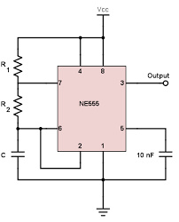
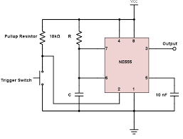

This tool helps you find matching common resistor and capacitor values for a desired oscillation of the 555 timer IC.
Fill out any 2 of the fields below (but not both Frequency and Period) to set the oscillation Parameters:
Set the desired pulse length below:
 part list: max number of calculated results: